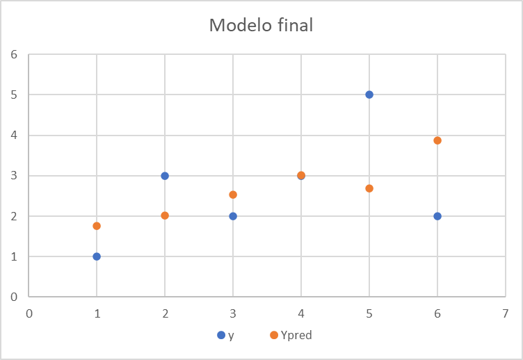
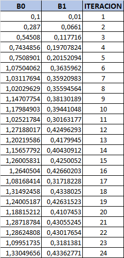
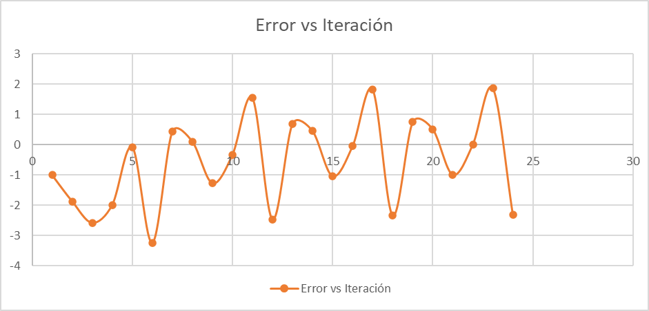
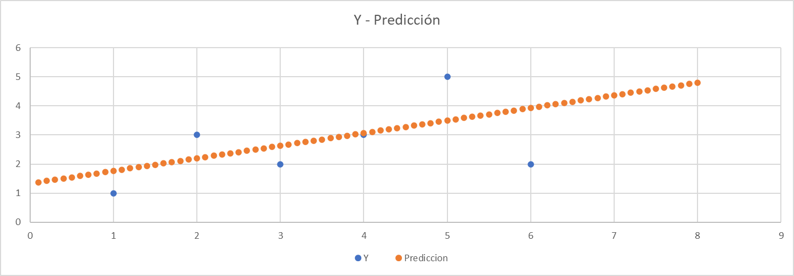

Juan M. Pérez
Dadas los siguientes datos x = {1, 3, 2, 4, 6, 5} y y = {1, 2, 3, 3, 2, 5}, utilizar una planilla excel para realizar gráfico de puntos.
Realizar entre 18 - 24 iteraciones del algoritmo de descenso de gradiente para encontrar los valores de $\beta_0$ y $\beta_1$.

a. ¿Cuántas iteraciones serían apropiadas? ¿Podemos hacerlo adaptivo?
Se puede hacer adaptivo, pero para este caso se realizaron 24 iteraciones. Se puede observar que a partir de la iteración 18 el valor de $\beta_0$ y $\beta_1$ no varían significativamente.
b. ¿Cuáles son los valores de B0 y B1 de todas las iteraciones? (mostrar una tabla) ¿cómo queda el modelo final?

El modelo final queda de la siguiente manera:
$$ y = 1,33049655985312 + 0,433627710131973*x $$
c. Graficar el error de predicción vs. iteraciones

d. Calcular el error cuadrático medio, y comparar con el obtenido en el TA1
$$ RMSE = \sqrt{\frac{\sum_{i=1}^{n} (p_i - y_i)^2}{n}} $$
El RMSE del TA1 es de 1,10122586815712 y en este caso el valor es de 0,0415144423295563.
La diferencia entre ambos valores se debe a que en el TA1 se utilizó la fórmula de la regresión lineal simple, mientras que en este caso se utilizó el algoritmo de descenso de gradiente.
e. Generar valores de entrada entre 0 y 8, con paso 0.1, aplicar el modelo y graficar los resultados.

f. Analizar los datos de entrada desde la óptica de los requerimientos a tener en cuenta para aplicar un método de regresión lineal (listar y argumentar)